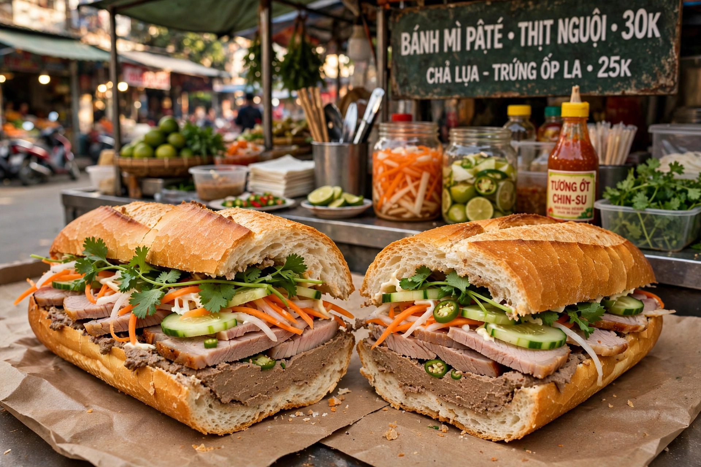

Banh mi

| Bánh mì | |
|---|---|
| Type | Sandwich |
| Place of origin | Vietnam (Saigon, mid-20th century) |
| Main ingredients | Single-serving baguette, mayonnaise, pâté, meats, pickled carrot and daikon, cucumber, coriander, chilli |
| Variations | Bánh mì thịt, bánh mì chả lụa, bánh mì xíu mại, bánh mì trứng, bánh mì chay (vegetarian) |
Bánh mì (Vietnamese: bánh mì, "wheat cake/bread") is a Vietnamese sandwich made with a short, crisp single-serving baguette and a fusion of French and Vietnamese fillings. The word bánh mì alone refers to the bread itself; the filled sandwich is the iconic street food of Vietnam and of the Vietnamese diaspora worldwide.
The bread
The baguette was introduced to Vietnam under French colonial rule in the 19th century. Vietnamese bakers in Saigon adapted it — typically using a proportion of rice flour and a thin, crackly crust with a light, airy interior — producing the distinctive short loaf used for bánh mì, usually split and lightly toasted before filling.
Fillings
The classic Saigon-style bánh mì, popularised after 1954 by shops such as Hòa Mã, combines: a spread of mayonnaise and pâté; cold cuts such as head cheese, Vietnamese sausage (chả lụa), sliced pork or pork belly (thịt nguội); pickled carrot and daikon (đồ chua); cucumber spears; sprigs of coriander; fresh chilli; and seasonings of soy sauce or Maggi. Regional and modern variations use grilled pork, meatballs in tomato sauce (xíu mại), fried egg, sardines, shredded chicken, or vegetarian fillings.
Spread
After the fall of Saigon in 1975, Vietnamese refugees carried bánh mì abroad, and it became a staple of Vietnamese bakeries and restaurants in the United States, France, Australia, Canada and elsewhere. It is now widely recognised internationally; "bánh mì" was added to the Oxford English Dictionary in 2011, and in 2020 Google marked the sandwich's popularity with a doodle on the anniversary of its dictionary entry.